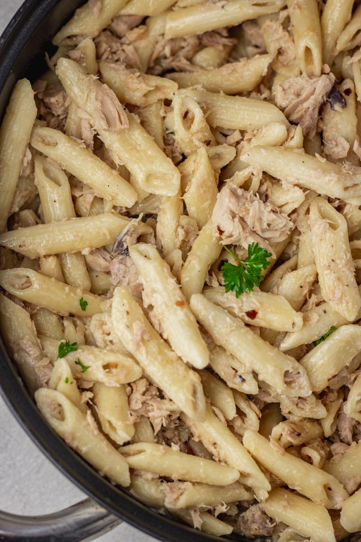

Tuna Pasta

Tantalisingly Tasty Tuna Pasta
- 2 Tuna cans (in Olive oil preferred
- 1 Chopped onion
- 1 Can of Sweetcorn
- Capers (to your liking)
- 600ml Soured cream
- Dill
- 200g grated cheese (can be a weaker or stronger type of cheese)
- 400g Pasta (Penne preferred)
Steps
- Drain Olive oil from the Tuna cans into your pan.
- Turn stove on high heat and wait until oil is hot.
- Put chopped onions in pan and allow to brown slightly.
- Add tuna to the pan and break down chunks in pan.
- Put in Capers and Sweetcorn.
- Allow to cook for around 4 minutes and then pour in Soured cream.
- Allow to simmer while putting the Pastato cook as per boiling instructions.
- Once pastais done, drain it and set aside.
- The sauce should be ready at this point, so add drained Pastato the mix.
- Follow by adding Cheese and Dill and proceed to mix the ingredients thoroughly.
Enjoy!